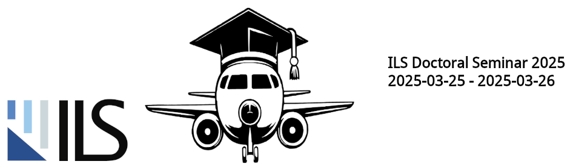

Doctoral Seminar 2025

It is a special pleasure for us to welcome every one of you to this doctoral seminar at the Institute of Aircraft Systems (ILS). The doctoral seminar aims to exchange research results and findings in the field of aeronautical systems and to network. This year, for the first time, the doctoral seminar will take place outside of the university of Stuttgart lasting 2 days, thus promoting direct exchange among scientists and enabling listeners to gain a comprehensive insight into the research areas at the ILS.
In the sessions, we will look at the latest advances, methods, and discoveries that are shaping the future of aircraft systems. This includes the development of avionics platforms, the study of certification methods, including in the AI area, as well as methods and tool development for avionics system development.
This seminar serves as a platform for collaboration, where ideas are exchanged, challenges are addressed, and solutions are formulated. It is not only an opportunity to showcase individual accomplishments but also a chance to engage in meaningful dialog across disciplines.